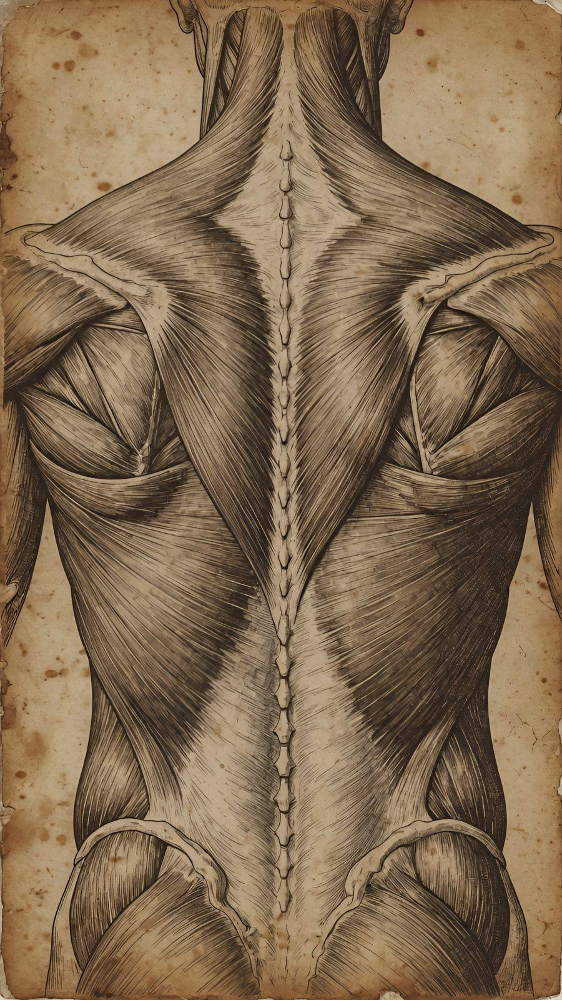
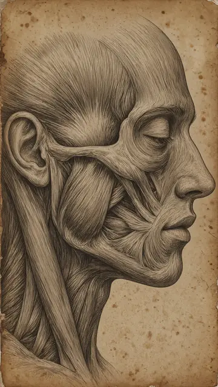

Анатомия без шумаAnatomy without noise
 Коснитесь тела · Touch the body
Коснитесь тела · Touch the body

Я изучал анатомию и продолжаю изучать сам. Это не факультатив. Это основа работы. Если не понимаешь, что лежит под кожей, ты не работаешь с телом. Ты работаешь с поверхностью.
Но медицинские книжки до меня доходят плохо. Откровенно скажу. Они перегружены — яркие схемы, стрелки, циферки, латынь. Я начинаю цепляться за яркие штуки и теряю то, что нужно увидеть — не запоминаю, отвлекаюсь, закрываю.
А потом я открыл гравюру. Старую. XVIII–XIX век. Чёрно-белую или в сепии. Без подписей, без указателей. Линии, форма, и всё.
И она до меня дошла.
Здесь я вижу. Становится интересно. Красиво. И выделяется именно то, что нужно. Не потому что гравюра точнее атласа. А потому что она тише. Она не спорит с изображаемым за внимание. Она показывает — и не объясняет.
Я не разбираюсь в техниках офорта и не понимаю тело так, как понимает хирург. Но посмотреть, как оно устроено, откуда что идёт, — это здорово, особенно когда это на красивом изображении.
Когда человек лежит на столе, я иногда открываю такую картинку на телефоне. Показываю — не как учебник, как мостик. Он видит форму, линию, переход от кости к мышце — и понимает не анатомию, а то, что с ним происходит. Где напряжение. Откуда оно идёт. Почему боль отдаёт в другое место. Ему не надо запоминать, не надо сдавать экзамен. Он просто смотрит — и узнаёт своё тело.
Каждый разбирается в своём — кто в стройке, кто в красоте, кто в чём-то ещё, а в строении мышц можно и не разбираться.
Медицина говорит о теле одним языком — точным, с цифрами. У массажиста другой — через форму, через прикосновение. Гравюра ближе ко второму.
Это про способ видеть.
У меня на стене нет медицинских плакатов. И на телефоне — тоже. Там гравюры. Потому что мне через них доходит. И тем, кому я показываю, — тоже.
Как пользоваться · How to use
- Коснитесь места на теле — откроется лист.Touch a place on the body to open its plate.
- Коснитесь листа — появится подпись, что это за место.Tap the plate to see what it shows.
- Массажисту: покажите человеку, где работаете. Тому, кто идёт на массаж: покажите, где беспокоит, если словами не объяснить.For massage therapists: show where you work. For anyone going to a massage: show what bothers you when words don't help.
Все листы · All plates
 IЗадняя поверхность шеиBack of the neck
IЗадняя поверхность шеиBack of the neck
 IIЛопаткаShoulder blade
IIЛопаткаShoulder blade

IIIЖевательная мышцаJaw muscle IVГрудь, ключица и плечоChest, collarbone and shoulder
IVГрудь, ключица и плечоChest, collarbone and shoulder
 VПредплечье и кистьForearm and hand
VПредплечье и кистьForearm and hand
 VIПоясница и тазLower back and hips
VIПоясница и тазLower back and hips
 VIIБоковая сторона бедраOuter thigh
VIIБоковая сторона бедраOuter thigh
 VIIIЗадняя поверхность бедраBack of the thigh
VIIIЗадняя поверхность бедраBack of the thigh
 IXИкра и ахиллово сухожилиеCalf and Achilles tendon
IXИкра и ахиллово сухожилиеCalf and Achilles tendon
 XСвод стопыArch of the foot
XСвод стопыArch of the foot
Под этим постом в Telegram — живое обсуждение, туда же со временем добавляются новые ссылки и фото.
Читать в Telegram →